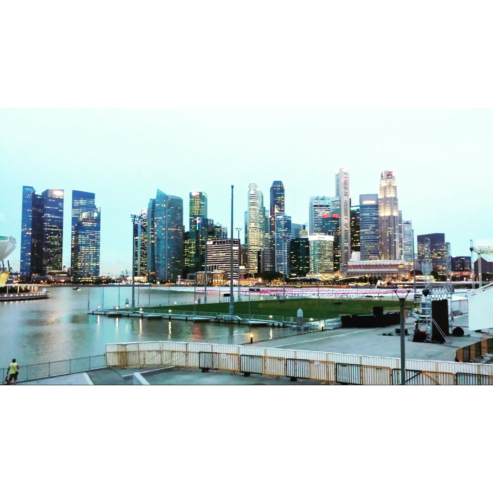
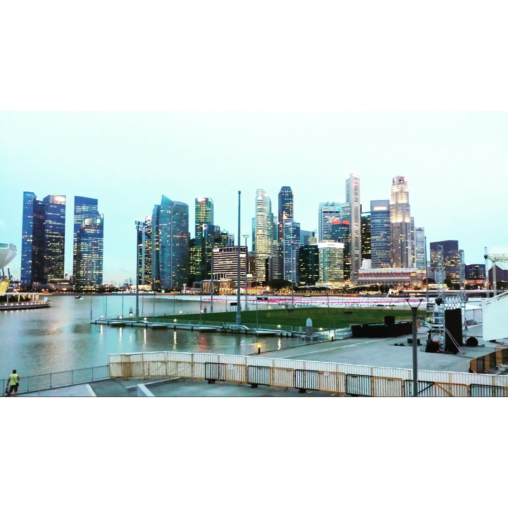

ABOUT ME
Hello, I am Smeet Patel from Wellington, New Zealand. I am a Master of Software Development student and have completed Bachelor of Commerce degree. I have acquired knowledge in the fields of accountancy, taxation, commercial law and information systems with an IT specialisation. I am developing my skills in software programming to expand on my technical skills by completing a Masters at VUW and doing various programming projects in my spare time.
When I am not studying, you will find me reading about new technologies or the current affairs, exploring new places (hiking and travelling), watching such as the Grand Tour, The Block NZ, Grand Designs or more often working on a project. Having a creative minded person, I always thinking about new ways to improve things, to build solutions for issues. I believe that to predict the future; you have to create the future or very much be part of the forefront of changing technology and being innovative.
Currently, I am Working on updating and adding past projects to the website, enhancing the user experience. Along with the site, am learning Android Studio and looking to convert java application to Android apps. I am also planning to make a native application for construction projects, to improve communication between key stakeholders.
July 2017 - July 2018
Tutor position within the School of Information systems for first-year commerce students. Core duties of the role include:
I work at a family-owned grocery store located in the vibrant Wellington CBD. This experience has helped me understand the dynamics of retail business.
Victoria University of Wellington, New Zeland |
|||
| Master of Software Development (MSwDev) | JULY 2018 – June 2019* | ||
| Expected Graduation December 2019 | * Expected Completion | ||
| Bachelor of Commerce (BCOM) | March 2015 – June 2018 | ||
| Major in Accounting and Information System with IT specialisation | |||
Scots College, Wellington, New Zeland |
|||
| NCEA Level 1-3, IB MYP | 2009 - 2010 | ||
| Accounting, Design Visual Communication, Economics, Maths and Physics | |||
| Top of Design Visual Communication 2014 (Scots College) | |||


 
